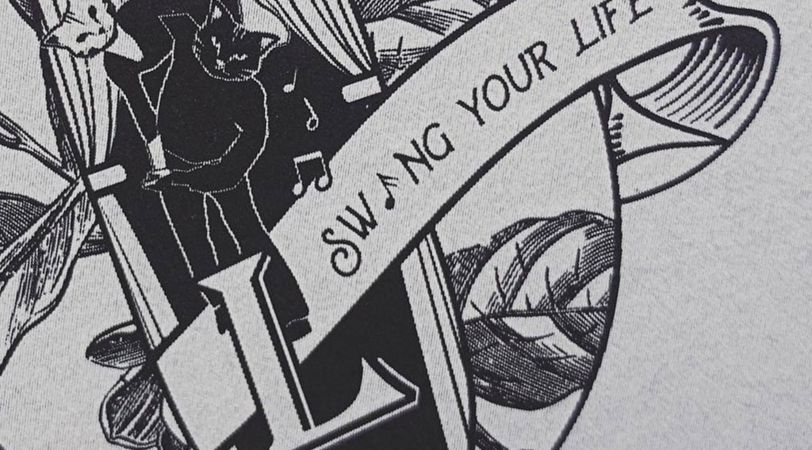
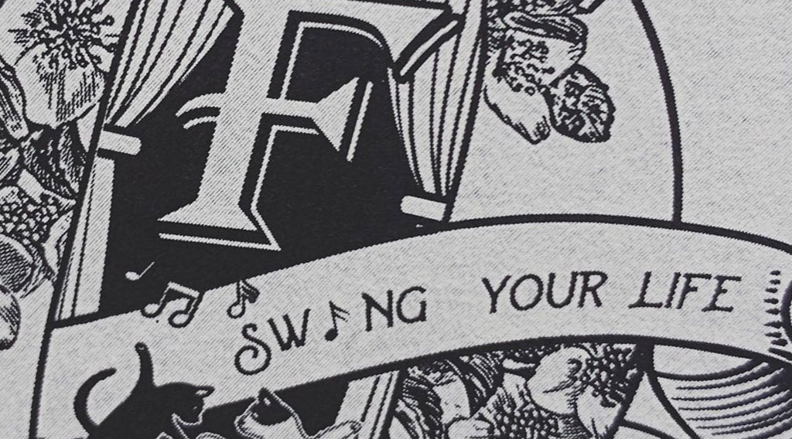
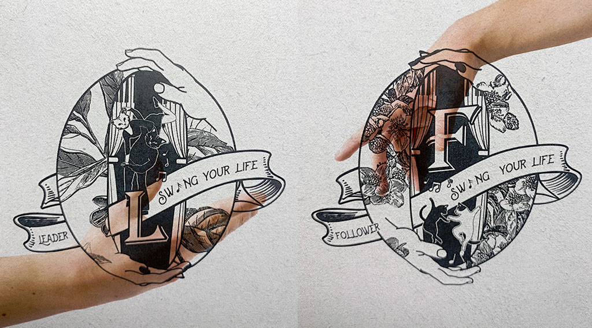

Hello world~ 我是Judo :)
從事影像設計約莫10年的
平面/網頁設計師
持續摸索跟專研有利於各類圖像創作的媒介與技術
目前回歸圖象創作ING~~
Hello world~
my name is Judo WhoWho and
I am a and senior graphic designer from Taipei.
從事影像設計約莫10年的
平面/網頁設計師
持續摸索跟專研有利於各類圖像創作的媒介與技術
目前回歸圖象創作ING~~
Hello world~
my name is Judo WhoWho and
I am a and senior graphic designer from Taipei.
TatooDesign
- Project Name
- leader or follower ?
- Client
- swing dancer
- Year
- 2021
leader or follower ?
Swing dance（搖擺舞）
搖擺舞起源於 1920 年代的美國，從藍調跟爵士樂演變而來，一開始是流行於黑人之間的舞蹈，到了 1930、1940 年代，時遇美國經濟大蕭條，也是 Swing Dance 崛起的時候。
搖擺舞(Swing dance)的雙人舞裡有2種角色，分別為leader跟follower，以往leader的角色多半是男性為主，follower的角色多半是女性，2種角色的互動方式取決於音樂的調性以及個人特色的展現，swing dance 雙人舞的迷人地方之一，在於我們可從角色互換的過程中發現"內在自我認同"的樣貌與多元性，並從與人群的互動中，漸漸地將依據性別而決定角色的視野，轉移到與音樂共舞的靈魂所在，從每一首樂曲的過程中，感受與對方共同完成一支舞的樂趣!!
Leader與follower刺青貼紙/創作理念
用leader跟follower共舞的雙手作為畫面的視覺重心，為了打破以往的性別價值觀，特意讓”L”(leader的縮寫）的手塗上象徵較女性化的指甲油，”F”(follower的縮寫）則反之，由於一支舞需要L跟F一起完成，所以畫面用接近象徵一體的視覺形象呈現，整體用偏復古的形象（vintage)接近1920-1980 年代的風格呈現，而1920也是swing dance的起始點。
L跟F的角色部分刻意用動物的臉跟肢體呈現，靈感來自台北永春捷運站的踢躂舞咖啡廳 TapLife 裡的店貓-麻糬，所以用貓咪舞者跳swing的形象呈現舞者的互動，背景的元素放入跟鋼琴(爵士樂基本樂器)結合的活動布幔，將象徵swing dance的表演氛圍帶入，未來預計會以更多動物的形象呈現舞者的多元性格跟舞風，貼紙也會不定期的更新，歡迎大家來Taplife跳舞的同時，也能嘗試用不同以往的角色跳舞喔耶～
使用方法
1.先讓雙手以及欲貼刺青貼紙的部位用酒精擦拭後保持乾燥
2.撕開透明薄膜
3.將圖案面朝下緊貼於皮膚上
4.使用水沾濕貼紙背面或是用全濕的衛生紙濕敷貼紙背面約15秒
5.待白底紙可左右滑動後即完成轉印
去除方法
用去光水擦拭即可去除
維持時間
刺青貼紙在一般不去刻意搓揉的情況下約可維持3-4天
建議貼在肌膚較不常碰水及摩擦、有皺褶的部位,例如貼在手軸關節處會比較容易脫落